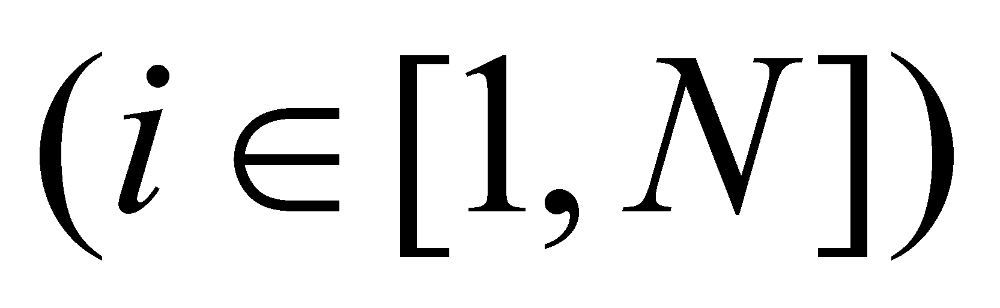
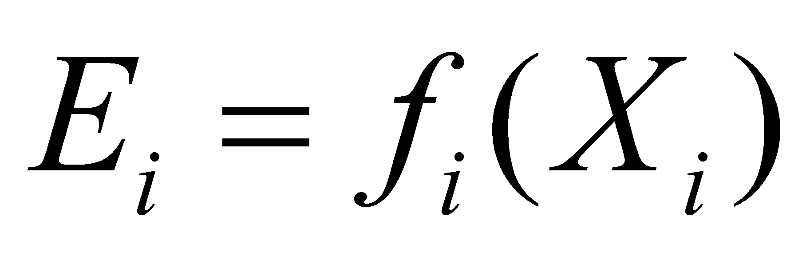

|
|
|
When we have dealt with the distributions in chapter 2, we noticed that the cumulative attributes which are distributed on a support domain (inner domain of a material or abstract object) have a global attribute - the total attribute amount existing inside the object (stock). The energy is also such a cumulative attribute, which can be contained (stored) only inside a MS and this attribute may result only through the transfer from other MS.
As we are about to see in the following chapter, the existence or non-existence of the energy attribute stockpile of a specific MS (existential, quantitative attribute of energy) is indirectly determined by an IPS, by assessing another attribute X which is included in the perception range of its input units, which depends through a specific relation on the energy stockpile from the monitored MS. This attribute which may be directly perceived by IPS (or measurable due to the auxiliary means) is an energy state attribute of MS.
According to the sections 7.6.2 and 7.6.3, a lot of N “energy forms” are known so far, each of these forms being related to a specific energy state attribute Xi , and the numerical value of this attribute is in direct ratio to the energy amount from a specific MS. In other words, there is a dependence relation51 between the value of the energy state attribute Xi and the value of the energy stockpile of the object:
 (7.6.4.1)
Few of these dependence relations of the existential attribute specific to the energy stockpile for various “energy forms” are briefly presented next.
51 Due to simplicity reasons, the dependence relations are considered as continuous functions.
Copyright © 2006-2011 Aurel Rusu. All rights reserved.